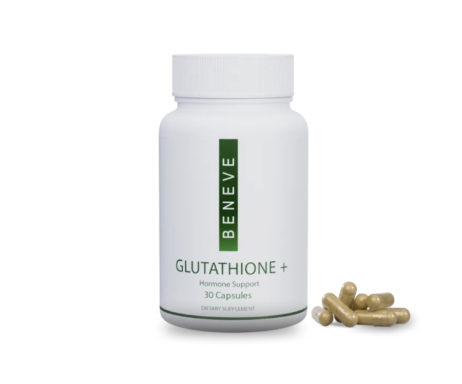
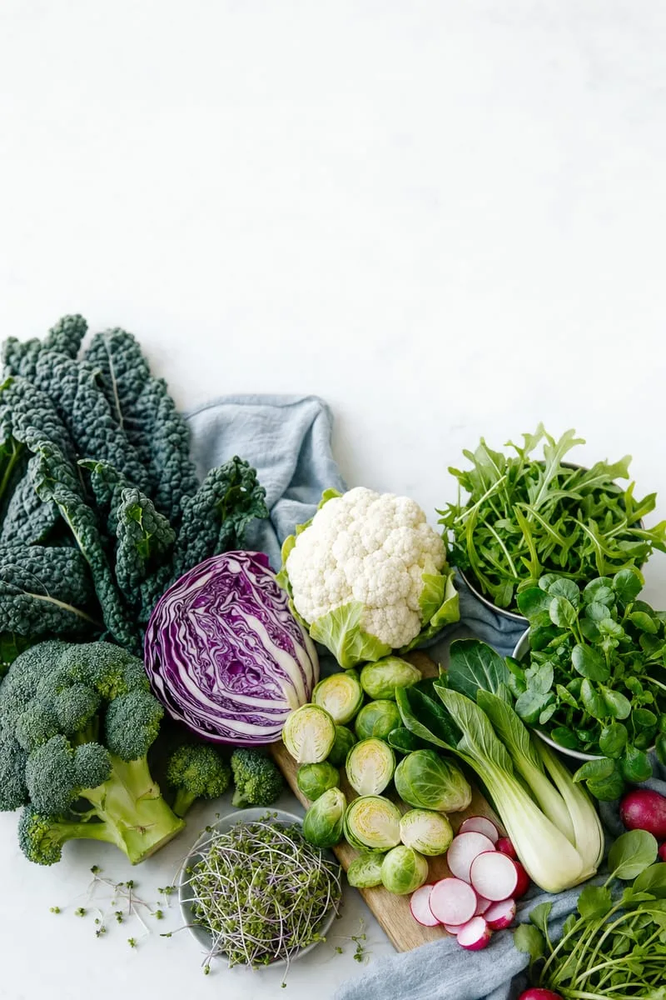
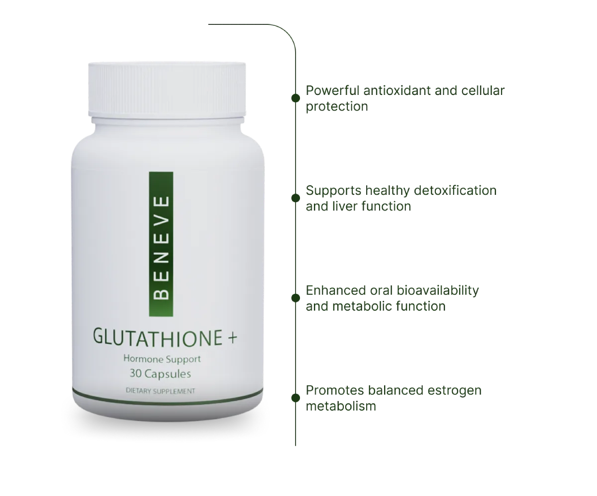
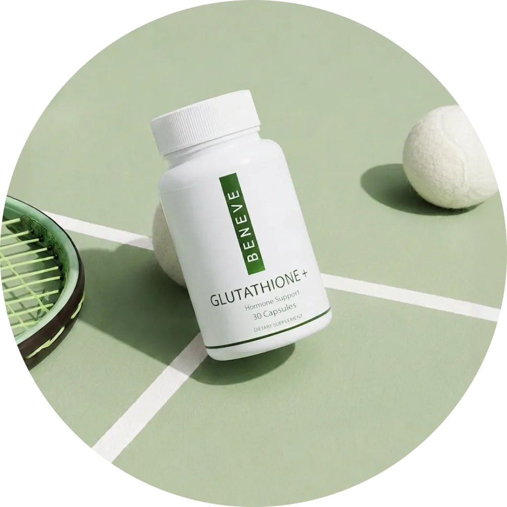
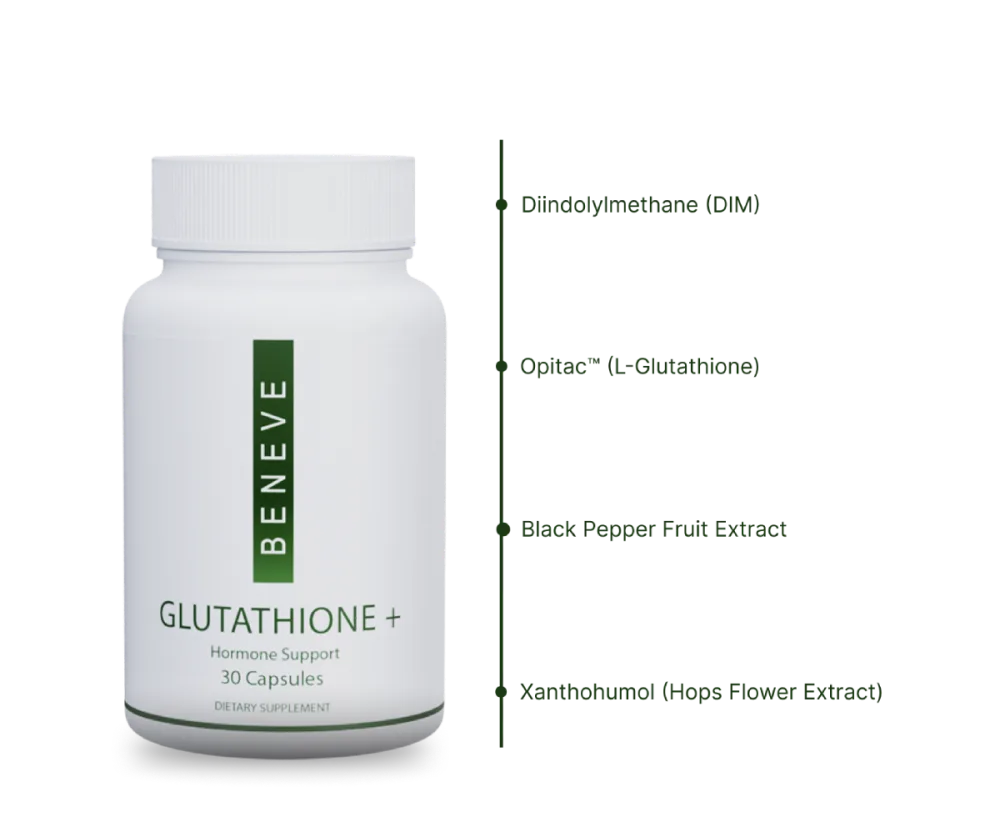
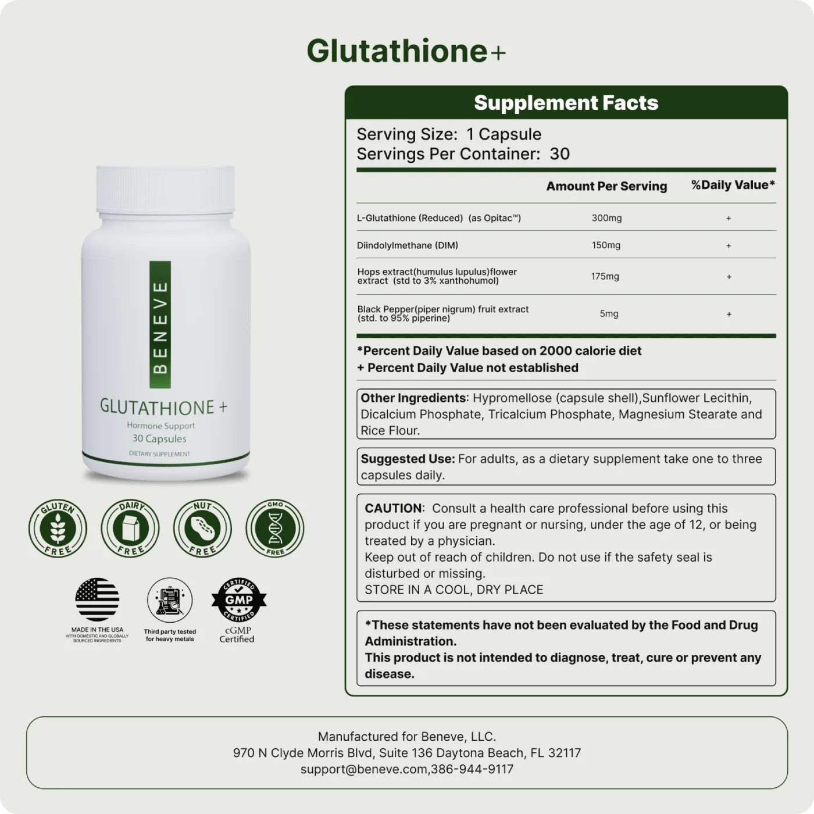

Exceptional Antioxidant Blend
A best-in-class formulation featuring DIM, Xanthohumol, and Opitac™ Glutathione, powerful antioxidants that help defend your body at the cellular level.
The systemic lane of your routine
An antioxidant blend featuring Glutathione, DIM, and Xanthohumol, formulated to support cellular health, hormone support, and overall wellness.

Whether you are focused on everyday wellness, recovery, or foundational support, Glutathione+ helps you elevate your health journey with clean, easy to take daily capsules.
A best-in-class formulation featuring DIM, Xanthohumol, and Opitac™ Glutathione, powerful antioxidants that help defend your body at the cellular level.
Ingredients work synergistically to help support AMP-activated protein kinase (AMP-K) activity, a key regulator of energy and metabolism.
One easy capsule per day fits effortlessly into your routine. No mixing, no measuring, no hassle.
Nut free, dairy free, gluten free, and non GMO, crafted with quality you can trust.
What makes it different

DIM is a compound derived from cruciferous vegetables, such as broccoli and kale. It has gained a wide array of attention for its potential support for the body's natural hormone health.
If your diagnostic pointed at dullness or at a hormonal shift, this is the ingredient behind that lane. You can eat your way to DIM through broccoli, cabbage and Brussels sprouts, and the free half of your routine tells you how. The capsule is the version for the weeks the cooking does not happen.

Glutathione, the superhero of antioxidants. Known for promoting overall well-being, as well as being an important player in hormone health, immune support, and detoxification.
Opitac is a branded, orally bioavailable form. That matters, because plain glutathione is famously hard for the body to absorb.

A natural flavonoid found in hops, the same plant used in brewing. It has been studied for its ability to neutralize free radicals in the body, and to contribute to the body's overall health and support of the aging process.
It is the ingredient you are least likely to get from food, which is a large part of why it is in here.

The fourth active in the formula, alongside DIM, Opitac™ Glutathione and Xanthohumol.
Black pepper extract is in almost every serious supplement for one reason: it is there to help the other three actually get absorbed rather than pass through.
Premium ingredients
Glutathione+ is known to help support:
If you are pregnant, nursing, taking medication or have a medical condition, talk to your healthcare professional before taking this or any dietary supplement.

A serum works on the surface and collagen works on the supply. Neither of them touches the load: the stress, the short nights, the sun, the drink most evenings. That is the lane this one is in, and it is one capsule a day.
These statements have not been evaluated by the Food and Drug Administration. This product is not intended to diagnose, treat, cure or prevent any disease.